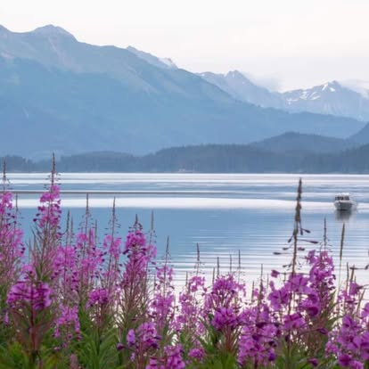

The Spit Run 10K
Plus the Cosmic Hamlet Half Marathon along the iconic Homer Spit. Timed race and untimed walkers division.

Promoting the activities, benefits and joys of running and walking for participants of all ages.
The Kachemak Bay Running Club is a 501(c)(3) nonprofit and proud member of the Road Runners Club of America. Being a member means supporting the joys and health benefits of running and walking, and encouraging active, social competition for youth and adults alike.
From first-time walkers to elite trail racers, there is a start line for you.
Race proceeds fund local youth running programs and community health.
Spit trails, glacier valleys and mountain ridgelines above Kachemak Bay.

A year-round calendar of racing on the Spit, in the mountains, and through the streets of Homer. Here are the ones our community counts down to.
Plus the Cosmic Hamlet Half Marathon along the iconic Homer Spit. Timed race and untimed walkers division.
A Mother's Day tradition on the Homer Spit Trail honoring moms and supporting young runners.
A rugged half marathon across ridgelines, glacier creeks and alpine trails above the bay.
A Thanksgiving morning tradition. Bring non-perishable food items as your entry to support the food bank.
Members enjoy discounted race entry, club events and the good feeling of funding youth running across the southern Kenai Peninsula.
Whether it is your first 5K walk or your fastest half marathon, there is a spot for you on the bay. Join hundreds of neighbors who run for health, community and youth.